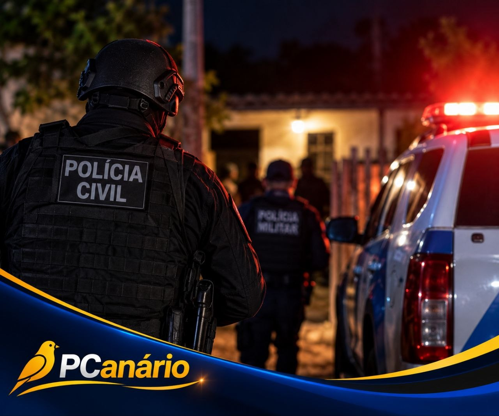

POLÍCIA
Dois homens morrem durante operação policial em Vila Valério
09/09/2026 às 16:16

Imagem ilustrativa gerada por IA
Dois homens, de 23 e 24 anos, morreram após serem baleados durante uma operação das polícias Civil e Militar na madrugada desta quarta-feira (9), no Córrego Ypiranga, em Vila Valério, no Norte do Espírito Santo.
A operação foi realizada por equipes da Delegacia de Polícia de Jaguaré e da 18ª Companhia da Polícia Militar para cumprir um mandado de prisão contra um homem investigado por homicídio.
Segundo a Polícia Civil, as equipes receberam informações de que três homens estariam escondidos em uma residência. Durante a ação, houve confronto e dois suspeitos foram baleados.
Os homens chegaram a ser socorridos e encaminhados para uma unidade de saúde, mas não resistiram aos ferimentos.
No imóvel, os policiais apreenderam armas, munições, celulares, dinheiro e porções de maconha, cocaína e crack.
O material apreendido foi encaminhado para perícia. As circunstâncias da ocorrência e a participação dos envolvidos continuam sendo investigadas.